|
|||||||||||||||||||||||||||
|
|||||||||||||||||||||||||||
|
２010年のアルプス スイス/ベルナーオーバーランド |
| 実 施 日 | ２０10年3月21日〜２５日 | |||
| 参加者 | 片山 秀雄 | |||
| 報 告 者 | 片山 秀雄 | |||
| 参加者数 | 1名 （会員1名） | |||
| 医者に奨められたコレステロール薬の影響で期待していたツアーが暗転した。登りが500m位続くと苦しくなりそれ以上登れなくなる。その結果目的の山に登れず歩くツアーになった。半年以上前から計画をたててきたツアーのまさに1週間前になんの疑問もなく未経験の薬を服用し始めたのは余りにも慎重さに欠けていた。自分ながら愚かさ加減にあきれるが失敗は私一人で充分だ、そういう思いで敢えて御報告する。 |
| 3月21日 ジュネーブ→車→Goppenstein→鉄道→Grindelwald 去年のガイド「アーブ」と空港で落ち合う。Goppenstein駅に車を置く。 3月22日 Grindelwald→登山電車→Jungfraujoch駅→Louwihorn下→Moench小屋 電車で登るにつれ昨夜の雨が高度で雪に変化しており今は快晴。雨で出発を遅らせたので計画のLouwihornは途中までで中止。ここからMoench小屋までの400mの登り返しになんと4時間もかかった。経験の無い苦しさだった。アーブから計画の変更を提案され己が体力の低下の現実に落ち込む。 3月23日 Moench小屋→Ewigschneefeld→Konkordidplatz→Gruenhornlucke→ Finsteraarhorn小屋 計画のFiescherhornはあきらめ一旦Konkordidplatzへ下ってから。 |
| 小さな画像はクリックすると拡大されます |
| 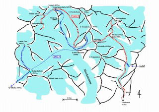 | 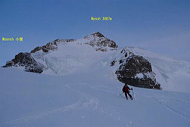 |
| 3280mのコルを越える。この500mの登りが苦しくたどり着くのがやっとだった。 去年はこうではなかったとアーブの言葉に胸が痛む |
| 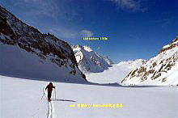 | 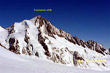 | 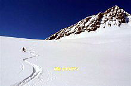 |
| Finsteraarhorn小屋は眼前にWyssnollenやWannenhornの素晴らしいスロープが拡がり 山スキーヤーにとっては最高のベースキャンプである。 昨日のMoench小屋は我々2名だけだったがここは人であふれている。 |
| 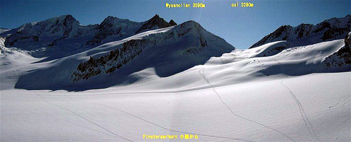 |
| 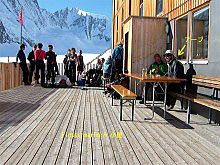 | Ａ | 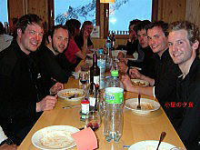 |
| 3月24日 Finsteraarhorn小屋→Finsteraarhorn3800m地点迄→小屋 苦しさは変らず登りを途中で諦める |
| 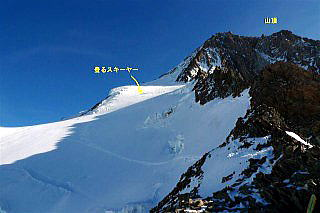 | 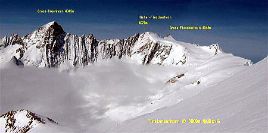 |
| 夕食でアーブから日本人(小生)のいびきがひどかったと同室のスイスの女性達が言っていたと聞き、はたと思い当たってその夜は薬を止めた。最近いびきが大きいと家内から言われていたのだ。アーブには薬が体力に関係しているかもしれないと話した。翌日から大荒れの天気予報でガイド達は撤退ルートを考え始めていた。アーブは小屋のオーナーにFiescher氷河下降を訊ねていたが他のガイド達もこのコースは経験が無い様子だった。 3月25日 Finsteraarhorn小屋→Fiescher氷河→Fieschertal村→タクシー→Brig→鉄道 →Goppenstein 前夜の相談でもう一人のガイドと一緒に行動する筈だったがアーブに促され小屋を出たのは皆が未だ寝ている早朝、降雪の中アンザイレンして滑降する。地図ルートどうり大アイスフォールまでは右岸の高みを滑るがここからは右岸は絶壁で前進出来ない |
| 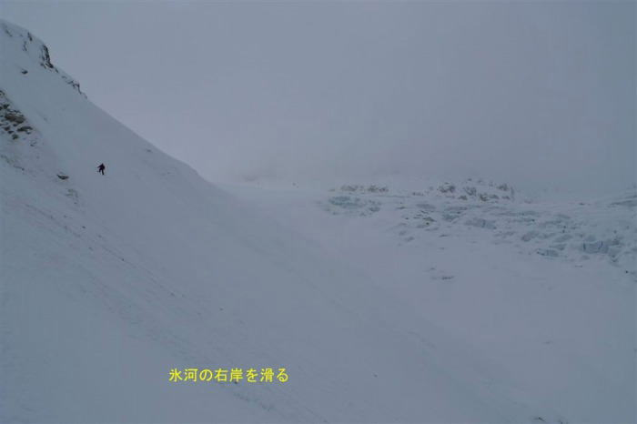 |
| アーブはスキーを脱ぎ山へ登り始め指示を受け小生も続いた。難所を高捲きするつもりのようであった。その時後続グループのガイドが通りかかり下から我々を見つけなにやら叫んで右岸に沿った氷河上に降りて行った。アーブも中止してそのガイドに続きルート探しに下って行く。長い待ち時間のあと下からOKのサインが出た。ルートは右岸の岩壁とアイスフォールの間にある岩の側堆積に在る狭く傾斜の急な亀裂だった。アイゼンで下降する。平な雪原に降りて全員ほっとする。ルートは地図どうりだったのだ |
| 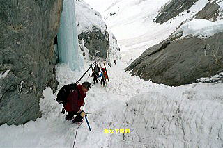 | 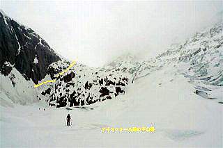 |
| 例のスイスの女性グループが昨夜の日本人はいびきが無かったとアーブに言ったので薬を止めたからだろうと説明したとのこと。あとは氷河の雪原を末端まで滑り発電所水取り入れの小さなダムの梯子を降り更に資材用リフト終点迄滑り、そこから歩いてリフト始発点まで下った |
| 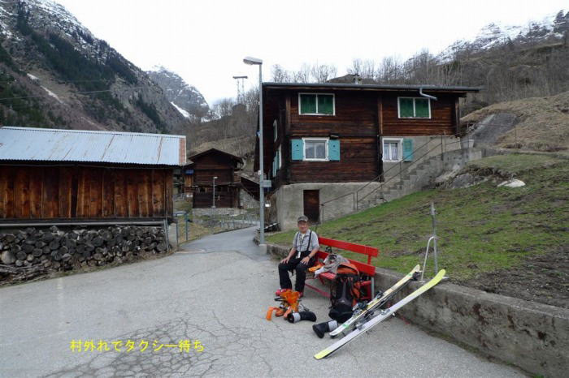 |
| 我々二人はここでタクシーを待ちBrigへ、鉄道に乗りGoppenstein駅下車。アーブが先に車に向い小生が一人で広場を歩いているとうしろからHIDEOと大合唱。驚いて振り返ると例のスイスの女性グループだった。76才といびきで名前を覚えてしまったのだ。下りの途中で別れて先に行った彼女らはフォンデュを食べて来たとかで偶然同じ電車に乗り合わせたのだ。ここに置いた車でジュネーブへ帰るという。高速道路で150 Km、東京から関越道水上あたり迄の距離だからご当地の人達は恵まれている。 |
| 薬の副作用 |
| 個人差があるといわれており薬はリピトールで小生の場合は運動能力の低下といびきに影響が出たが服用を止めてから回復した。小生と同窓の友人は同じ薬を２年程前に服用し１年でコレステロール値は確実に低下したが今現在脱力感と倦怠感に悩んでいる。 リピトールの副作用はネット検索できるがここでは他の薬にも含まれるスタチンで検索 した。 http://d-inf.org/drug/HMGCoA.html 下記はその抜粋である。 コレステロールを下げる薬のなかで、ＨＭＧ〓ＣｏＡ還元酵素阻害剤という部類に属するものは、成分名が○○スタチンとついているために、スタチン系と言われています。そのスタチン系のまれな副作用として横紋筋融解症という副作用があることが知られています。 ●横紋筋融解症は筋肉がとけてしまうという怖い副作用で、具体的には手足の筋肉の痛 み、脱力、赤褐色の尿がでるなどの症状がでます。 現在、日本国内で販売されているスタチン系の薬は、これだけです。 プラバスタチンナトリウム（メバロチン；三共） シンバスタチン（リポバス；万有製薬） フルバスタチンナトリウム（ローコール；日本チバガイギー） アトルバスタチンカルシウム水和物（リピトール；山之内製薬） （セリバスタチンは販売中止です） |
{kind=link}
{kind=link}
{kind=link}
{kind=link}
{kind=link}
{kind=link}
{kind=link}
{kind=link}
{kind=link}
{kind=link}
{kind=link}